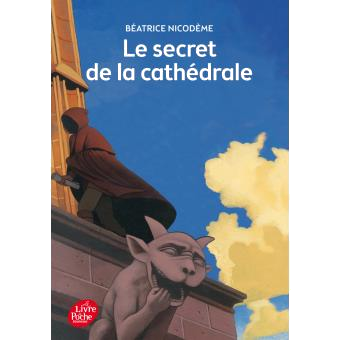

Le Secret de la cathédrale
- 2010015819
- 260
- 2014
- Le Livre de Poche
- Béatrice Nicodème
- Jeunesse
- très bon état ( 4 )
- 12100 -> MILLAU
- Depuis le : 01/01/2021
-
Sur le chantier de construction de la cathédrale d'Amiens, les morts succèdent aux accidents dans d'étranges circonstances. L'édifice est-il maudit ? L'équipe des bâtisseurs cache-t-elle un meurtrier ? C'est ce que Colin, jeune tailleur de pierres, veut découvrir après la mort de son père, le maître tailleur.